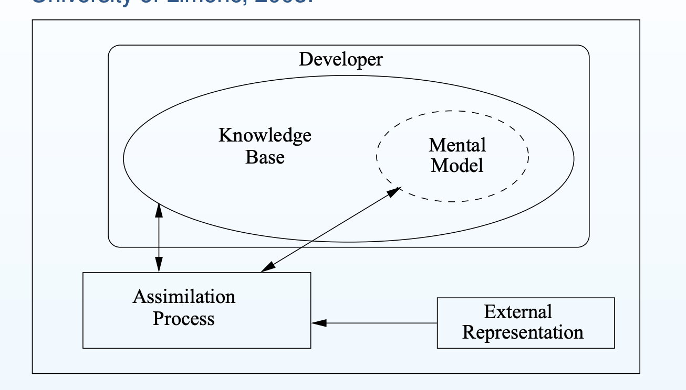
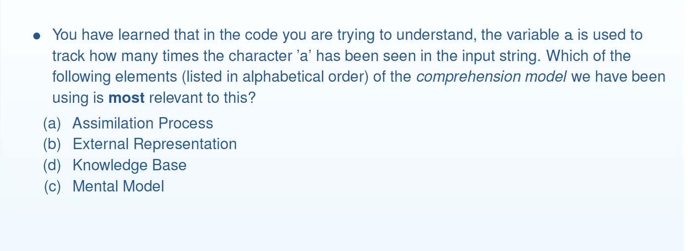

==== Week 1-2 ====
Defining Maintainability
The degree of effectiveness and efficiency with which maintenance activities can be carried out on the product. It includes these independent sub-attributes:
Comprehensibility (Analysability)
Degree of effectiveness and efficiency with which the implementation can be understood in order to conduct maintenance activities with confidence.
Alterability (Modifiability)
Degree to which a product or system can be effectively and efficiently changed without introducing defects or degrading existing product quality.
Testability
Degree of effectiveness and efficiency with which test criteria can be established for a system, product or component and tests can be performed to determine whether those criteria have been met.
Making a decision
To discuss and justify a decision: there should be:
- A decision criteria
- Consideration of other options, how are the alternatives not as good as your choice, based on the criteria.
Software Decision-Making criteria
- Time to first delivery (Buildability)
- Execution time (performance)
- Existing knowledge of development team
- Time before next failure (reliability)
- Uptime (availability)
- Total cost of ownership (Maintainability)
Comprehensibility
The more time and effort you need to put in to understand code well enough that you are confident enough to conduct maintenance activities the less comprehensible it is, therefore the less maintainable it is.
Program Comprehension Model
A program comprehension model is a means to explain how comprehension happens, the main components, processes, and interactions between them.
External representation
Anything external to the developer
E.g. source code, documentation, other developers, program traces, other relevant source code
Knowledge Base
What the developer knows that is likely to be relevant,
e.g. domain knowledge, knowledge of programming language,
Mental Model
The developer’s current understanding of the program under consideration,
e.g. known parts and current hypotheses
Assimilation Process
How the developer uses all available information to update the mental model,
e.g. generation and verification of hypotheses
Why similar variable names make the code less comprehensible?
- Undistinguishable makes it hard to form a hypothesis and verify the hypothesis through reading the code.
- Identifiers that do not tell anything about what the variable/method is doing also hinder the process of forming and verifying hypothesis, but is a different problem from Undistinguishable identifiers.
Naming
Every time we need to go to External Representation, there is a big drop in comprehensibility.
How can we use the comprehension model to decide which are the better names (for
comprehension)?
- Assumptions: - putting facts we know (from Knowledge Base) into Mental Model is more efficient that putting new knowledge
(from External Representation) into Mental Model - accessing Mental Model is more efficient than rest of Knowledge Base - accessing Knowledge Base is more efficient than accessing External Representation - If we are familiar with the convention that factorial is often written n! (it is in Knowledge Base), then the
mapping from “value the factorial is of” to “n” should not take much effort to add to Mental Model if n
is used as the parameter - If not familiar with the convention, then it is less obvious that “n” is the most efficient (and so best) choice
Use Intention-Revealing Names
The name of a variable, function, or class, should answer all the big questions.
It should tell you why it exists, what it does, and how it is used.
If a name requires a comment, then the name does not reveal its intent. (from Martin).
- I see a use of a variable, in order to understand it I need to answer at least one of these questions about it
- I answer these questions by checking MM (most efficient), KB (next most efficient), or EP (least efficient)
- If the name does not reveal its intention, it could not be indexed into the readers’ Knowledge Base. The reader will need to review External Representation or context, thereby the comprehension process will be less efficient.
Avoid encodings
encodings = choosing names in a way that encode various information.
e.g. Hungarian Notation, start of a variable name gives information about the types of the variable. Hungarian Notation was used heavily in the implementation of Windows, because in the early days, the compilers for C has essentially no type check (the compiler only has a limited set of data type, e.g. int, char, float, pointer). Hungarian Notation is an effort to create intention revealing variable names.
We don’t need encodings any more, because IDEs will tell us what they are. e.g. whether they are field, what data type they are.
Information hiding
Information hiding is a part of making good design.
Do I want my clients to know that they are given an interface? Martin says no.
Research findings on how naming affect comprehensibility
are full words better for variable names? it depends.
Example question on understanding Comprehension process.
- Answer: Mental Model.
- Keyword: You have learnt that…
==== Week 3 ====
Readability
Part of comprehensibility. The ease/difficulty in which we can extract information from external representation.
Formatting
Martin on formatting:
Code formatting is about
communication, and communication is the professional developers first order
of business.
Vertical Formatting
- File size — what is “too big”? (Martin: about 200 LOC, max 500)
- Order within a file - Concepts closely related should be kept close together (to reduce scrolling if nothing
else) - Functions call functions declared below - From the comprehension point of view: Efficiency. - Blank lines provide visual cues separating “concepts”
So it could be worth it to have a commit to re-arrange the method orders.
Horizontal Formatting
- Line width (Martin 45 characters): Efficiency of comprehensibility
- Use whitespace to separate (or not) to indicate how close the relationship: Efficiency and Effectiveness of comprehensibility
- Indentation
Effectiveness and Efficiency
Efficiency: The effort you take (usually time)
Effectiveness: How often you get things wrong.
Commenting
- What it on the paper is external representation (comments/code, in their formats);
- What you know about Java syntax is in your knowledge base.
- What you know about the programme is in your mental model.
The proper use of comments is to compensate for our failure to express ourselves in code. –Martin
Why are comments bad?
Even good comments create extra work. Changes in code will create extra work to change comments too.
For a comment to be worth keeping, it has to improve the code in some way - usually comprehensibility.
Which is more efficient:
- reading the comment in the source code, or
- having to reconstruct the intent by understanding almost everything about how the code works?
Both require access to ER, but without the comment, more of the ER is needed so less efficient.
Commenting: Key points
- Avoid the need for comments wherever possible
- Comments that support comprehension (and possibly other aspects of maintainability) are acceptable.
Comments are a kind of documentation.
Code Review Discussion
What type of code review comments do you find useful in improving maintainability?
- Comments seeking improvements on naming and formatting
- Comments identifying bad smells, For example:
- “literal values” that should be made “symbolic values” for better changeability
- two classes tightly coupled
- long methods that have semantic gaps between the code and the intention
- helpless “orphan” classes that let everything else manipulate its data
What type of code review comments do you find not so useful?
- Duplicate comments about the same problem in the code
- Demotivating comments
Literal -> Symbolic constants
- Symbolic constant is a label or name that is used to represent a fixed value that never changes throughout a program.
10is a literal constant. You can’t assign a value to 10, and its value can’t be changed.
To enhance changeability, we should aim to use symbolic constants instead of literals when we could.
=========== Week4 ===========
Understanding Mental Model and Knowledge Base with an example
For the comprehension model discussed in the course, explain the difference between the mental model and the knowledge base. Use (small!) code examples to illustrate the difference.
Peter’s Example
1 | int a = 1; |
The code above assigns two integer values to two variables and then prints the sum of the two values in the console.After reading the code, we have understood that a is an integer whose value is one, while b is another integer valued two. The console will print out the sum of a and b, which is the result of 1+2. The information above is in our mental model after understanding the code.
To understand the code, we need to index some of the code with our knowledge base. For example, to understand that a is an integer whose value is one, we access the knowledge that int means the integer type, and = is to assign the value to the variable. Also, in our KB, we know that System.out.println() is to print the stuff in the pair of parentheses. By indexing this code into our KB, we know that the result of a+b is going to be printed.
–Peter
Mental Model often include a “Hypothesis”
1 | for (int i = 0; i < 3; i++) |
- After reading the first line, we understand that we are starting a loop, and we understand that the loop is indexed by
i. These understanding of the code is now in our Mental Model. - In our Mental Model, we also expect that there will be a loop body following the loop header, that will be repeated for three times. We expect that
imight be used in the loop body. - There is no
{}or indentation to indicate the loop body after the first line. The un-indented line conflicts our current mental model, and we have to go back to Assimilation Process. - We look up in our Knowledge Base and remember that if there is only one line after the loop header, the
{}can be omitted. We also find in our Knowledge Base that indentation does not impact how the programme will execute in Java.
Functions
Martin on functions
- Small (Emmmm I’ll try whenever I can. I feel that sometimes making the method small does not necessarily make things better)
- Do One Thing (“cohesion”) (Totally! Comprehensibility, Changeability, AND Testability)
- One Level of Abstraction per Function (More on this below)
- Reading Code from Top to Bottom (Smoother Assimilation Process)
- Use Descriptive Names (Helps the indexing of Knowledge Base)
- Function Arguments (More on this below)
- Have No Side Effects (When needing a side effect, extract the side effect to a setter method - Do I agree with this though????)
One Level of Abstraction per Function
- An approach to reducing the number of levels of abstraction is to move bodies of loops into a separate function. Challenges:
- Manipulation of local variables will be challenging. Ways I know:
- Make the local variable “global”
- Pass them as arguments/return value
- Pass a reference type - does this break the “no side effect” rule though?
- If the function returns inside the loop body, it will be hard to extract.
- Manipulation of local variables will be challenging. Ways I know:
Shorter Argument List
Yes I agree that the more arguments a function has, the harder it will be for users to feed it and the harder it will be for readers to understand it.
Ways to reduce functions that I have read from another Martin’s Refactoring:
- Preserve whole object
- Introduce Parameter Object
- Replace Argument(Parameter) with Method Calls
- If a method call to another parameter object, or a method call to “this” can get the information I need.
Function: Do one thing
Functions should do exactly one thing (also known as cohesion).
A good test: can you describe what the function does without using “AND”?
Question: how about my public int takeAllSeeds()?
Function: One level of abstract per function
One possibly-useful heuristic: maximum of 2 levels of indentation.
Functions with only one level of abstraction are probably small.
Functions: Removing number of returns
Having one
What’s the problem with too many arguments?
- Hard to test
- Hard to comprehend
Single Argument functions
In martin’s opinion, acceptable use of single argument functions:
- to ask a question about the argument
- return a value based on the argument (transforms it)
- signal an event that indicates some change in state should take place
Avoid functions with “flag” arguments: where the function behaves differently depending on the value of the argument. This makes the function do more than one things.
Avoid “out” arguments
The user will not expect that the argument they pass on will be changed.
Key Points of functions -> maintainability
- Use of many small functions can aid comprehension (at least)
- because their names indicate the one thing they do
- often functions with the lower level of abstraction do not need to be considered, reducing the need to go to the external representation.
- Refactor to improve use of functions.
Code Review
History of Code Review
Walkthroughs (Punched Cards Era)
- Code Listings
- Manual Review
Computers read in punch cards, and code review goes through the human-readable code written on papers.
People sit down together in a meeting and go through the code written on paper looking for defects. Very inefficient and hard to reproduce/repeat.
Fagan’s Softwared Inspection
A well-defined rigorous process.
- Planning
- Overview
- Preparation
- Inspection Meeting
- Rework
- Follow-up
In addition to code, this process could be applied to other parts of software dev lifecycle requirements, documentation.
Still on paper, manual review.
The rigorous process is very time-consuming. Not liked by Agile/DevOps, in seek for faster delivery.
Modern Code Review (MCR) (2013)
Automate code review process to make it more efficient.
- Lightweight: Does not require reviewing the whole set of code.
- Not rigorous
- Tool assisted,
Tools for today’s code review
- Code Review Tools
- Collaboration and Management of Code reviews.
- Facilitate communication between reviewers.
- Provide differential views for reviewers so that they do not need to review all lines: just look for diff to review.
- GitHub Code Review, Crucible, Gerrit
- Static Analysis Tools
- Full/Partial Automatic Defect Detection
- Full automation: Some defects are well defined. For example, long lines
- Partial automation: Suggest a potentially bad identifier name. Final decision up to decision of reviewers.
- Not always accurate
- Suggestion of fixes
- e.g. SonarQube, Checkstyle, FindBugs
- Full/Partial Automatic Defect Detection
- Other supporting tools
- Reviewer Recommendation: recommend reviewer based on certain criteria (e.g. experience of programming language)
- Defect hotspots: highlight parts to be reviewed.
Benefits of Code Reviews
- Improve the code
- Fewer Defects in Code
- Improved code quality
- Improve the programmer
- Spread knowledge
- Education of junior programmers
- Motivation to write better code
What should we look for in code?
- Do I understand the code?
- Correct?
- Secure?
- Readable?
- Performant?
- Maintainable?
- Needed? Can we avoid writing it?
- Testable?
- Does it have associated tests and appropriate documentation?
- Operable? (can I operate, monitor and debug this code in production)
How to make useful code review comments?
- Useful
- Identification of function issues
- Alternate scenarios (corner cases)
- Suggestions on APIs, design, coding conventions, etc.
- Somewhat useful
- Nit-picking issues (inconsequential errors)
- e.g. “Could you change back to whitespace indentation like in the existing code, please”
- Alternate implementation suggestions
- Nit-picking issues (inconsequential errors)
- Not useful
- questions to understand the implementation (not useful for the code.)
- praise (🤔🤔🤔 Emmmm so I shouldn’t be giving 👍 and 🎈 around code reviews? I could do that in person 💬 if I feel I have to.)
- future work (not related to current sprint. Should be documented elsewhere)
What to do
- Flag things that are dangerous, bad, mistaken, or wrong in the code.
- Don’t make too many trivial comments
- Be polite
- Don’t just criticize, offer suggestions.
🐾🐾🐾🐾🐾🐾 Week 1-4 Review 🐾🐾🐾🐾🐾🐾
Topics we’ve covered so far:
Maintainability (intro)
- motivation: maintenance costs dominate the lifetime cost; ease of maintenance; one aspect of quality
- maintenance activities
- why care about quality? what else does quality include?
- quality attribute: a quantificable or testible property of a system that is used to indicate how well the system satisfies the needs of stakeholders
- defining maintainability
- multiple definitions from people
- our definition: The degree of effectiveness and efficiency with which maintenance activities can be carried out on the product.
- Our definition is a 3*2 matrix:
- The three independent sub-attributes
- efficiency and effectiveness
- decisions
- several possibilities
- criteria(for software, could be availability, performance, maintainability, reliability, buildability, current knowledge, etc.)
Comprehension
- definition (effectiveness, efficiency, understood, to conduct maintenance, with confidence)
- a program comprehension model to describe how comprehension happens:
- Knowledge Base(current knowledge),
- Mental Model (active understanding, including known parts and current hypotheses),
- External Representation(whatever is external),
- Assimilation Process (process to update mental model, for example, generation/verification of hypotheses)
- Mapping between the problem domains and the source code
- Mental model: the mapping that has been recovered so far
- Knowledge base: where hypotheses of mapping are constructed from
- Assimilation Process: the process where mapping is updated
- External Representation: through consulting which hypotheses are confirmed (or invalidated). Including source code, people, stackOverflow
- Evaluating/determining Comprehensibility
- we learn “characteristics” of code that impacts comprehensibility.
- example: long method
Naming
- How naming effect comprehensibility (efficiency/effectiveness)
- Three assumptions on comprehension:
- KB->MM is faster than ER->MM
- accessing MM is more efficient than rest of KB
- accessing KB is more efficient than ER
- Intention-Revealing Names (easy to be indexed into MM and form the mapping of code -> problem domain)
- Avoid Encodings (often need to go to ER)
- Choose names that are easy to add to the MM, or can be easily found in the KB. Avoid the need to go to the ER.
- Researches on naming
- research largely support our intuition, but not extensive.
Format for Readability
- Code Readability
- part of comprehensibility
- Definition: Degree to which the code elements of interest can be identified and distinguished
- Readability -> Comprehensibility
- If it is hard to read, then the effectiveness and/or efficiency of comprehending it is reduce.
- lower readability -> lower comprehensibility
- readable !-> comprehensible
- Formatting
- Vertical formatting
- size (efficiency)
- ordering: newspaper metaphor, higher abstraction before lower-level implementation (efficiency)
- blank lines (efficiency)
- horizontal formatting
- line length (efficiency)
- spaces (efficiency and effectiveness)
- indentation (effectiveness)
- Vertical formatting
Comment
- Why self-explaining code is better?
- more accessible in MM
- efficiency
- Informative and intention comment
- less from ER
- efficiency
- Redundant comment
- unnecessary extra work for building, maintaining, reading
- lower efficiency
- Key points:
- Avoid needs for comments by making the code self-explaining
- comments that support comprehension/other aspects of maintainability are acceptable: reducing the need to extract from ER
Functions
Structured Programming
- no
go to - discipline on code organisation
- one form of it forbids more than one
returnfrom any function
- no
Martin’s suggestion on functions
- Small function
- Do one thing (cohesion)
- One level of abstraction(at most 2 levels indentation?)
- Reading from top to bottom (newspaper)
- Descriptive Names (intention revealing)
- Less arguments
- Problems with “too many” arguments:
- harder to understand purpose of function (comprehensibility)
- hard to test (testability)
- Reduce arguments
- argument objects
- method’s class fields
- Problems with “too many” arguments:
- No side effects
- no “output” arguments: argument whose value gets changed visibly to the caller
Key points
- Use of many small good functions can aid comprehension
- intention revealing name, self documenting code
- reduce the need to go to External Representation, as we only need to learn the names of the functions with lower levels of abstraction, instead of its implementation.
- Refactor to improve use of functions
- Use of many small good functions can aid comprehension
Researches we’ve had a look at:
Naming 1: full word/abbr/single letters _ work experience _ education * gender
Dawn Lawrie, Christopher Morrell, Henry Feild, and David Binkley “Whats in a Name? A Study of Identifiers” 14th IEEE International Conference on Program Comprehension (ICPC’06) 2006.
- Hypothesis
- Primary hypothesis: full english word identifiers lead to better source comprehension (than abbreviations or single letters)
- Secondary hypotheses: increased work experience and qualifications lead to better ability to comprehend (independent of style of identifier); gender plays a role in confident but not comprehension
- Conclusion
- full word > single letter (acronyms)
- abbreviations ~ full word (Especially women)
- work/education -> confidence, but not comprehension
- Challenges to validity
- double-blind?
- participant sampling
- functions selected: how representative?
- algorithms recognised independent of names?
- functions shown in same order
- meaningfulness of identifiers
- Evaluation
- what does our comprehension model predict?
- useful for future improvements?
- have readers in mind
Naming 2: Replication and Extension of Naming 1
Johannes C. Hofmeister, Janet Siegmund, Daniel V. Holt “Shorter identifier names take longer to comprehend” Empirical Software Engineering (2019) 24:417–443 https://doi.org/10.1007/s10664-018-9621-x (extension of 2017 paper)
- RH
- Semantic: faster comprehension with words as identifiers
- syntactical: no effect
- Different tasks
- semantic errors
- syntax errors
- Conclusions (RH proved)
- words as identifiers lead to faster detection of semantic defects
- when in-depth understanding not required (e.g. syntax errors) identifier names do not make a difference
Indentation: impact on comprehension?
J. Bauer, J. Siegmund, N. Peitek, J. C. Hofmeister and S. Apel, ”Indentation: Simply a Matter of Style or Support for Program Comprehension?,” 2019 IEEE/ACM 27th International Conference on Program Comprehension (ICPC), Montreal, QC, Canada, 2019, pp. 154-164, http://doi.org/10.1109/ICPC.2019.00033
- Replicates
Replicates R. J. Miara, J. A. Musselman, J. A. Navarro, and B. Shneiderman, Program indentation and comprehensibility, Communications of the ACM, vol. 26, no. 11, pp. 861867, 1983. - Measure:
- correctness
- response time
- visual efforts
- Result: Indentation shows no effect on:
- correctness
- response time
- perceived difficulty
- eye movement
- In consistent with original study
- Threats to validity
- participant number
- participant representativeness
- not enough code
- experience of participants
- use of eye tracker
Comment Quality Assessment
D. Steidl, B. Hummel and E. Juergens, ”Quality analysis of source code comments,” 2013 21st International Conference on Program Comprehension (ICPC), San Francisco, CA, 2013, pp. 83-92, doi: 10.1109/ICPC.2013.6613836
- Semi-automated approach
- supervised machine learning
- quality assessment based on information retrieval
- Basic idea: how well do the words in the comment match the words in the identifier
- too close: not adding value
- no match: irrelevant
Explain examples using concepts we’ve learnt
Why is longer method likely to reduce comprehensibility?
Longer the method, the less likely it is doing one single thing, and so has multiple mappings, requiring multiple hypotheses to be created and verified.
How programming knowledge impact comprehensibility
Knowledge of language is faster accessible from knowledge base (KB). If we don’t know it, we will need to find it from external representation (ER), which will take longer and so reduce the efficiency of comprehension.
How will variable name l impact comprehensibility
what l is for is in the mental model (MM), but if we confuse l, 1, and i, then we will access the wrong thing in the MM, which reduces the effectiveness of comprehension.
Is n a good parameter variable name for factorial?
If we are familiar with the convention that factorial is often written n! (it is in KB), then the mapping from “value the factorial is of” to “n” should not take much effort to add to MM if n is used as the parameter.
How name-revealing variables enhance comprehensibility
- We need to know about the variable: why it exists, what it does, and how it is used.
- We answer questions about the variables by checking MM (most efficient), KB (next most efficient), or EP (least efficient).
- Intention-revealing names makes it easier to map between the source code and the problem domain, and therefore enhances efficiency and effectiveness of assimilation process.
- Intention-revealing names are easier to be indexed to MM, and therefore more efficient when I try to access what the variable is for.
- You are more likely to recall the meaning, meaning no need to find the declaration. -> code is more efficient according to comprehension model
Pros and cons of hungarian notation
- Pros:
- with no useful static type checking, when a name is encountered in the code, can determine what it is being used for — provided you can decode it (efficient if decoding knowledge is in KB, inefficient if in ER)
- if the compiler you use limits the length of identifiers, or you are not a very good typist and your “IDE” does not do auto-complete (this is more about buildability than comprehensibility)
- Cons:
- it is hard to remember the encoding (there are so many rules!), so usually end up going to ER, reducing the efficiency of comprehension.
How too much spaces and empty lines impact comprehension
- vertical spacing slows down finding the line (efficiency)
- whitespaces make it harder to determine which bits are associated (efficiency and effectiveness)
How informative, intent comments could help comprehension:
Reading comment/reading everything in code both require access to ER, but without the comment, more of the ER is needed so less efficient.
Comment on the usefulness of the comment:
1 | /** |
- Mapping the comments with the descriptions in the list is a good start point:
- Good comments: Legal, Informative, Intent, Clarification, Consequences, TODO, Amplification, API documentation (e.g. Javadocs)
- Bad comments: Mumbling, Redundant, Misleading, Mandataed, Journal, Noise, Scary Noise, Position Markers, Attributions, Commented-out code, HTML, Nonlocal Information, Too much Information, Inobvious Connection, Function headers
- Explain how the source code will not be enough for a reader with basic language knowledge.
- Explain how the comment will facilitate these readers to better understand the code.
The four practice discussions we’ve done:
- How bad names hurt maintainability
- How bad formatting/commenting hurt maintainability (remove commented out code!)
- Code review 1: what are good comments (be useful; be kind when you can; give an alternative when you can)
- Code review 2: what kind of comment helps enhance maintainability and what does not.
Things I don’t know if I understand (or agree) yet:
- No more than one
returnfrom any function? - Is class field on kind of “global” variable? If so, is it good?
- How far should I go in reducing levels of abstraction?